Monitoreo Inalámbrico de Vibración · Diagnóstico FFT
Tus máquinas anuncian sus fallas. Spectra-IO las escucha.
Sensores inalámbricos de vibración en tus equipos rotativos. Espectros, tendencias y alarmas en tiempo real en tu navegador y en tu teléfono. Operando en producción hoy.
2 orgs.
operan Spectra-IO en producción actualmente
4,000
bins de FFT por eje — espectros con calidad de analista
Minutos
para instalar cada sensor — sin cableado, sin paradas de planta
0
proyectos de TI — el sistema jamás interfiere con la red de tu planta
Tu planta trabaja las 24 horas. El monitoreo también.
El problema
La falla que nadie vio venir.
Los rodamientos y las cajas reductoras no fallan de forma súbita; se degradan silenciosamente durante semanas y colapsan en pocas horas. Cuando la máquina genera suficiente ruido o temperatura para que alguien lo note, el daño y el programa de producción ya se han perdido.
Las rondas mensuales con colectores portátiles se diseñaron para otra época. Una lectura cada 30 días pasa por alto todo lo que ocurre en el intervalo, y una sola parada no planificada en una línea crítica cuesta más que años de monitoreo continuo.
Ronda mensual con colector
Spectra-IO, continuo
Mediciones por punto
12 al año
Continuas, múltiples veces al día
Quién revisa el rodamiento
Un técnico en cada visita
Nadie — el sensor permanece fijo en sitio
Ventana de falla
Suele manifestarse entre visitas
Monitoreo continuo con sistema de alarmas
Historial de tendencia
Escaso e ingresado manualmente
Automático, completo y siempre en línea
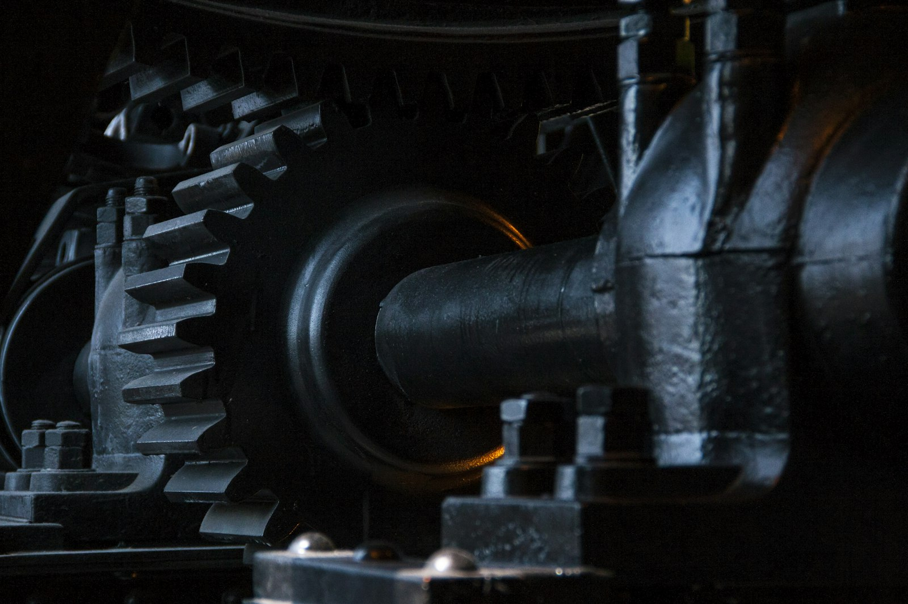
El monitoreo continuo supera con creces a la medición intermitente. La máquina advierte lo que se aproxima — siempre y cuando exista la tecnología adecuada para registrarlo.
La solución
Fija el sensor a la máquina. Ese es todo el proceso de instalación.
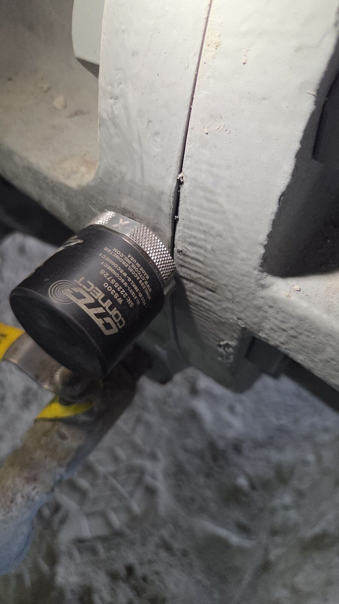
Sensor triaxial inalámbrico montado en un equipo en operación — con todo y polvo de cemento. Esta es una instalación real, no una fotografía de estudio.
Sensores
Inalámbricos, triaxiales, años de autonomía
Sensores industriales de vibración y temperatura que se montan mediante base magnética o espárrago. Sin ductos eléctricos, sin charolas de cables y sin electricistas.
Gateway
Un tomacorriente estándar — ese es el único requisito
Recoge los datos de los sensores cercanos por radiofrecuencia y los transmite mediante su propio enlace celular. Ningún dispositivo se conecta a tu red.
Plataforma
Tendencias, espectros y estado en una sola URL
Cada máquina, cada sensor y cada lectura organizados por planta, equipo y rodamiento en cualquier navegador.
Alertas
Umbral superado → notificación al teléfono
Niveles de advertencia, alarma y crítico por medición. Cuando una máquina cambia de comportamiento, el personal adecuado se entera de inmediato.
Arquitectura interna
Del rodamiento a tu navegador.
Los sensores se comunican con el gateway de forma inalámbrica mediante radiofrecuencia de corto alcance y bajo consumo, diseñada específicamente para esta aplicación.
El gateway integra su propia conectividad a internet a través de un enlace celular con túnel cifrado. Las reglas de tu cortafuegos (*firewall*) permanecen intactas, ya que ningún tráfico externo ingresa a la red.
La plataforma ejecuta el procesamiento complejo —el almacenamiento, el análisis FFT, la gestión de umbrales y el sistema de alertas operan fuera de tu planta y cuentan con nuestro mantenimiento continuo.
Los equipos de seguridad informática valoran positivamente esta arquitectura por lo que omite: no abre puertos, no requiere servidores locales y nunca interfiere con la red de la planta.
Despliegue
Sin cables. Sin servidores locales en tu planta. Sin proyectos de TI.
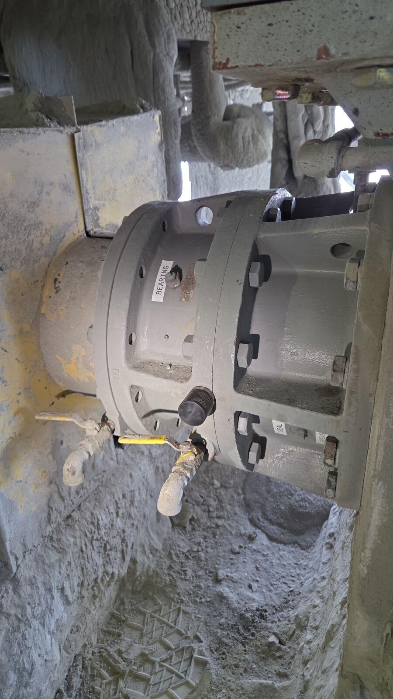
En la chumacera, junto a las líneas de grasa — instalado en cuestión de minutos con el equipo en funcionamiento.
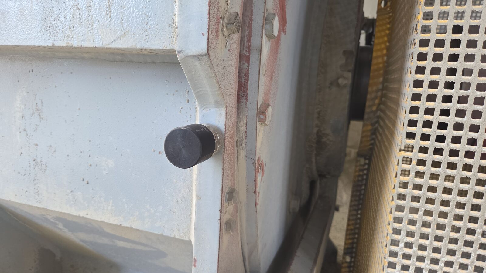
En el marco de una zaranda vibratoria — el tipo de entorno hostil y polvoriento donde la instrumentación cableada suele fallar.
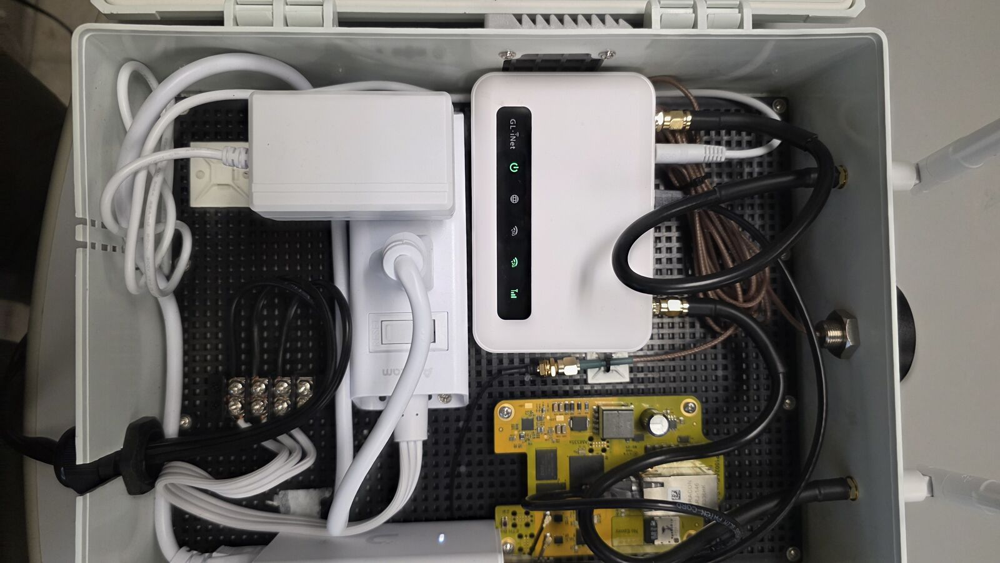
Todo el "cuarto de servidores": un gabinete que integra la tarjeta del gateway, el router celular y la fuente de alimentación. Esta es la única caja instalada en la pared.
Instalación: monta el sensor, vincúlalo y listo. Sin paradas de equipo, sin permisos de trabajo en caliente y sin tendido de cables.
Comisionamiento: el gateway se enciende y establece su enlace celular de manera completamente autónoma.
Operación: accede a través de la URL. No requiere software cliente, ni VPN para los usuarios, ni parches de seguridad de tu lado.
Toda la infraestructura física en sitio se reduce a un sensor en la máquina y una caja en la pared. El resto corre por nuestra cuenta — y esa es precisamente la idea.
El producto
Todo lo que el equipo de mantenimiento necesita, en una sola URL.
Una vista de flota estructurada al modelo de tu planta —sitios, equipos, conjuntos y rodamientos— con indicadores de severidad en tiempo real, flechas de tendencia y acceso detallado a cada lectura.
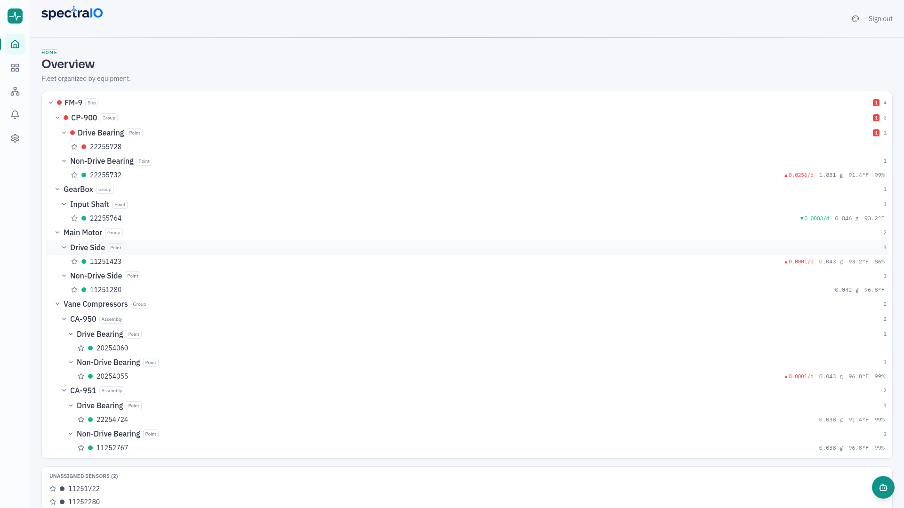
Toda la flota organizada por equipos, con la severidad visible de un vistazo.
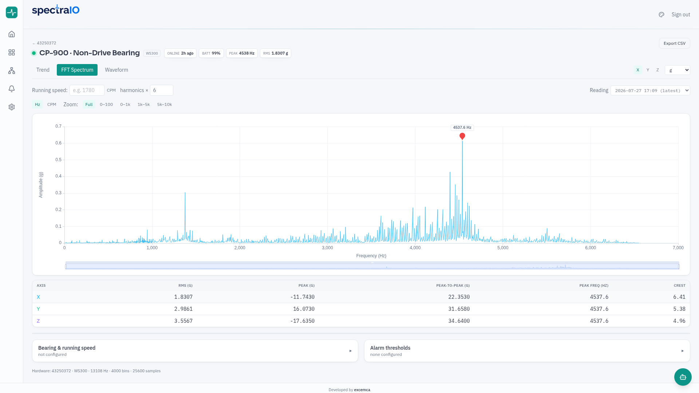
Espectro a resolución completa con regla armónica y conmutación de ejes.
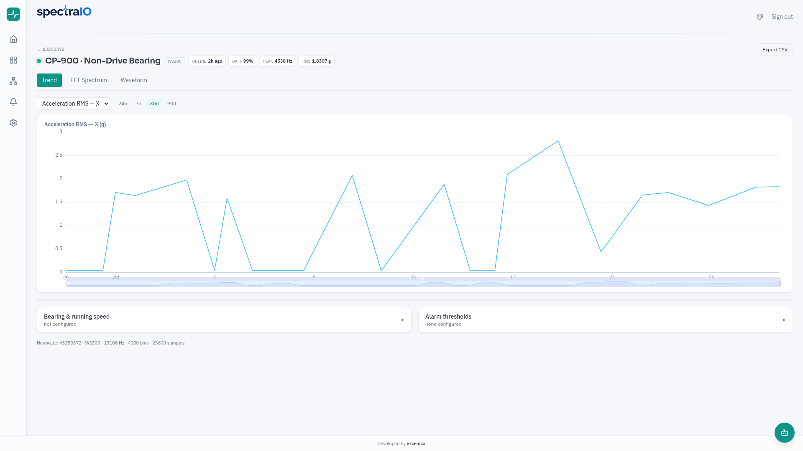
Tendencias de RMS y bandas en cualquier ventana temporal — el historial operativo de la máquina.
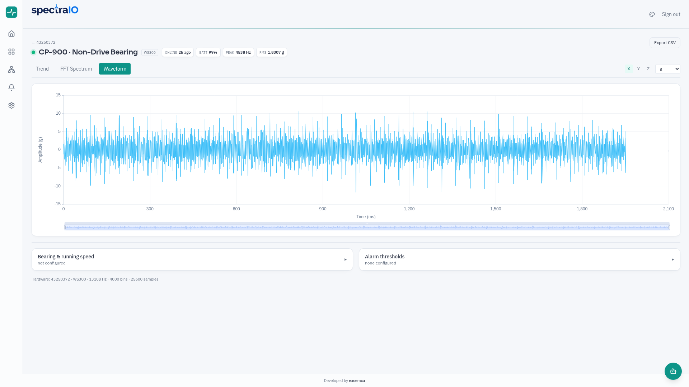
Forma de onda cruda en el dominio del tiempo, con cada muestra almacenada visible en pantalla.
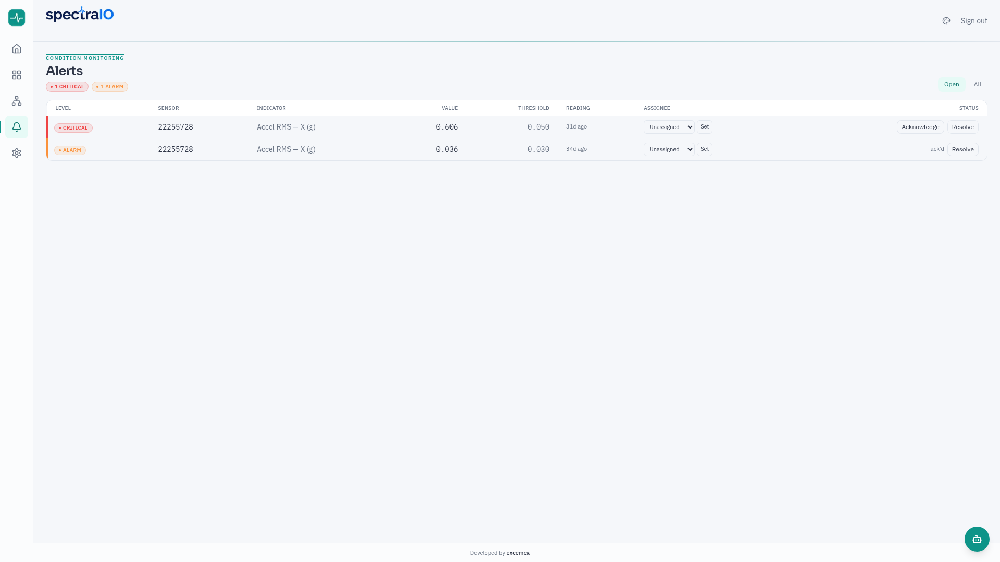
Flujo de alertas: reconocimiento, asignación y resolución con trazabilidad de auditoría.
La misma plataforma en la palma de tu mano, diseñada para el piso de planta.
Diagnóstico avanzado
FFT con calidad de analista y cada punto almacenado en pantalla.
La mayoría de los paneles de control convencionales submuestrea el espectro para ajustarlo a la interfaz, descartando de manera imperceptible la resolución que el especialista requiere. Spectra-IO procesa y renderiza cada punto almacenado —hasta 4,000 bins por eje—, preservando la resolución nativa indispensable para el análisis de rodamientos.
Regla armónica: permite anclar una frecuencia base y leer sus múltiplos directamente sobre el espectro.
Frecuencias características de rodamientos: al configurar el rodamiento y la velocidad de operación, la plataforma determina automáticamente la ubicación teórica de las frecuencias BPFO, BPFI, BSF y FTF.
Herramientas profesionales: visualización en Hz o CPM, bandas de zoom y conmutación de ejes; el flujo de trabajo que un analista de vibración utiliza en su día a día, accesible desde cualquier navegador.
Esta es la diferencia entre una aplicación que solo muestra una gráfica y una herramienta que permite al analista tomar decisiones fundamentadas a partir de ella.
Validación en campo
Operando actualmente en una planta de cemento activa.
Spectra-IO no es un prototipo. Monitorea equipos rotativos en una planta de cemento en operación —trituradoras, compresores y reductores— transmitiendo lecturas las 24 horas a través de redes celulares y soportando condiciones severas de polvo, calor y vibración.
Dos organizaciones utilizan la plataforma en producción hoy en día. El sistema ha superado la prueba del mundo real: altas temperaturas, polvo denso, vibración constante y las complejas condiciones de red industrial que suelen bloquear a las soluciones de demostración.
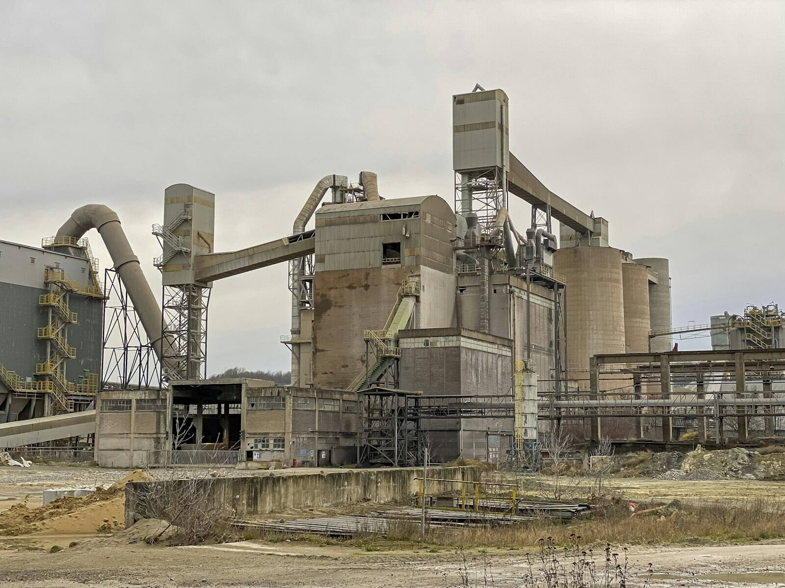
La mejor referencia para un producto industrial es simple: ya está realizando el trabajo en un entorno real.
Hacia dónde se expande
De la planta industrial al sector petrolero.
Dentro de una planta centralizada, los sensores se encuentran próximos y un solo gateway los cubre. Sin embargo, gran parte de los equipos críticos no se localizan en un recinto cerrado, sino que están distribuidos a lo largo de kilómetros: macoyas de perforación, estaciones de bombeo y patines remotos.
Este es un desafío de radiocomunicación que la plataforma resuelve por completo. Mediante nodos LoRaWAN de largo alcance, un número reducido de gateways puede cubrir un campo completo de activos dispersos, ofreciendo años de autonomía por nodo, sin necesidad de una tarjeta SIM por máquina y sin requerir zanjas u obra civil. La plataforma procesa protocolos MQTT estándar en ambos escenarios: la tecnología de radio es un componente intercambiable y no un sistema nuevo.
Activos de extracción dispersos — exactamente para lo que fue diseñada la radiocomunicación de largo alcance y bajo consumo.
La misma plataforma y los mismos tableros de control — desde una planta individual hasta un campo petrolero completo.
Una plataforma, múltiples tecnologías de radio: monitorea la sala de compresores hoy y la macoya de pozos mañana — sin necesidad de adquirir un segundo sistema.
Siguiente paso
Pruébalo con tus propios equipos.
La vía más rápida para evaluar Spectra-IO es mediante un programa piloto: unos cuantos sensores instalados en los activos que generan mayor preocupación, un gateway y tus datos fluyendo en cuestión de días — semanas, no meses, para tomar una decisión informada.
Tú seleccionas las máquinas — aquellas cuyas fallas generan mayores pérdidas.
Nosotros realizamos la instalación y el comisionamiento — en pocos minutos por sensor y sin interrumpir la producción.
Tú evalúas información real — tendencias, espectros y alarmas de tus propios equipos, no un conjunto de datos simulados.
Solicita un programa piloto y posiciona la plataforma donde realmente debe estar: directamente en tus máquinas.